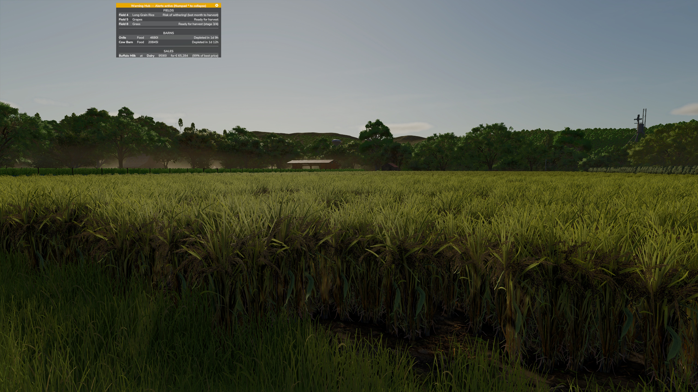
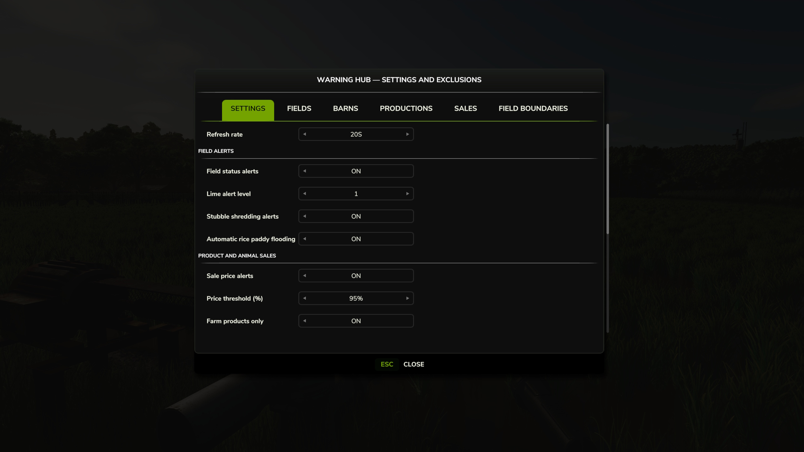
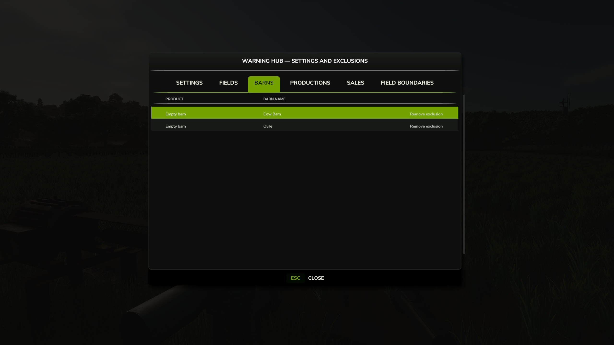
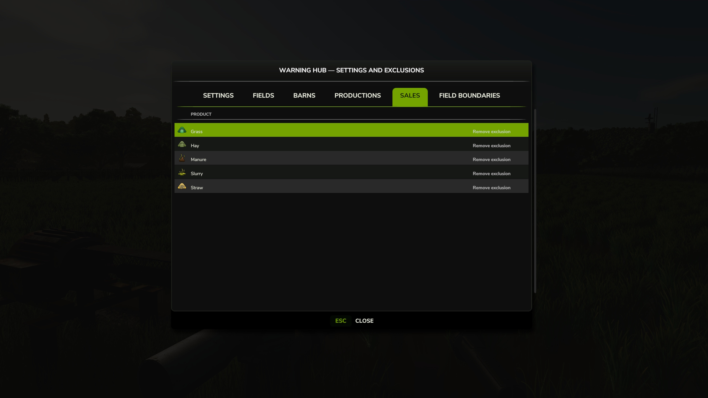
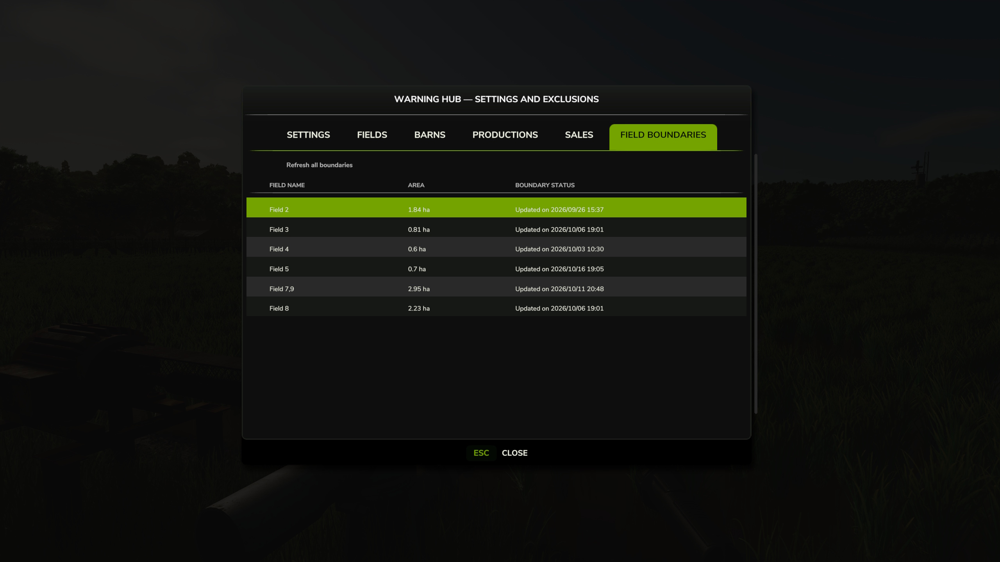

Warning Hub Script Mod per FS25
Warning Hub — Your Farm’s Control Center
Warning Hub gives players a single, always-visible HUD panel that gathers all the important farm alerts in real time: fields, barns, productions and selling opportunities. No more manual rounds through menus, buildings and fields to check whether something needs doing: Warning Hub takes care of it, with the right color, the estimated time and one click to reach the spot straight away.
- Fields section: the mod’s most complete monitoring — Alerts you when a field is ready to harvest, or needs plowing, rolling, fertilizing, lime, weeding, stone removal or mulching of residues, and when straw/hay left on the ground needs collecting or a vineyard needs pruning. Supports rice fields with automatic flooding and draining when needed (can be turned off if you prefer to do it yourself), showing “in progress” while the pump is already working instead of still flagging an action that has already started. Fields that have been physically merged (the inner boundary no longer exists in game) are treated as a single real area, not as two separate fields, avoiding false alerts. Compatible with Precision Farming for soil sampling.
- Barns section — Food, water, straw, slurry, manure, storage space for output products and average health, with correct depletion/fill time estimates even when several barns share the same manure heap or silo extension.
- Productions section — Detects your active production chains and alerts you when a raw material is missing or a finished product’s storage is full, with the estimated time before it happens, even when several recipes in the same building share the same input or output.
- Sales section — Notifies you when a product reaches the price threshold you set, with the best selling point and estimated revenue; for animals, it alerts you when they reach their maximum selling value, before they start losing value.
- Dedicated settings panel — Turn each section on or off separately, adjust the sales price threshold, the farm-products-only filter, the scope of animal alerts (all animals or only those raised for sale) and the refresh rate. From the same panel you can also manage field boundaries and the alerts you have individually disabled (for a specific field, barn, production or product), re-enabling them whenever you want.
- One click to mark or teleport — Click the name of a field, barn, production or selling point to mark it on the map, or teleport straight there.
- Colors at a glance — White for information, green for selling opportunities, orange for upcoming alerts, red for situations that are already critical.
- Draggable, collapsible panel — Place it wherever you like and collapse it with a key to free up screen space; it refreshes automatically every in-game hour or at the fixed interval you choose.
Warning Hub — Il Centro di Controllo della Tua Fattoria
Warning Hub mette a disposizione del giocatore un unico pannello HUD sempre visibile che riunisce in tempo reale tutti gli avvisi importanti della fattoria: campi, stalle, produzioni e occasioni di vendita. Niente più giri manuali tra menu, edifici e campi per controllare se c’è qualcosa da fare: ci pensa Warning Hub, con il colore giusto, il tempo stimato e un click per raggiungere subito il punto interessato.
- Sezione Campi: il monitoraggio più completo della mod — Ti avvisa quando un campo è pronto per la raccolta, ha bisogno di aratura, rullatura, concimazione, calce, diserbo, rimozione sassi o trinciatura dei residui, e quando serve raccogliere paglia/fieno rimasti a terra o potare un vigneto. Supporta le risaie con allagamento e svuotamento automatici quando servono (disattivabili se preferisci agire di persona), mostrando “in corso” mentre la pompa sta già lavorando invece di continuare a segnalarti un’azione già partita. I campi fisicamente uniti (confine interno ormai inesistente in game) vengono trattati come un’unica area reale, non come due campi separati, evitando falsi avvisi. Compatibile con Precision Farming per il campionamento del suolo.
- Sezione Stalle — Cibo, acqua, paglia, liquami, letame, spazio dei prodotti in uscita e salute media, con calcolo corretto dei tempi di esaurimento/riempimento anche quando più stalle condividono la stessa concimaia o estensione del silo.
- Sezione Produzioni — Individua le tue catene di produzione attive e ti avvisa quando manca una materia prima o quando il magazzino di un prodotto finito è pieno, con il tempo stimato prima che succeda, anche quando più ricette nello stesso edificio condividono lo stesso input o output.
- Sezione Vendite — Ti segnala quando un prodotto raggiunge la soglia di prezzo che hai impostato, con il punto vendita migliore e il ricavo stimato; per gli animali, ti avvisa quando hanno raggiunto il valore di vendita massimo, prima che comincino a perdere valore.
- Pannello impostazioni dedicato — Attiva o disattiva ogni sezione separatamente, regola la soglia di prezzo per le vendite, il filtro sui soli prodotti agricoli, l’ambito degli avvisi sugli animali (tutti oppure solo quelli allevati per la vendita) e la frequenza di aggiornamento. Dallo stesso pannello gestisci anche i confini dei campi e gli avvisi che hai disattivato singolarmente (per un campo, una stalla, una produzione o un prodotto specifico), riattivandoli quando vuoi.
- Un click per marcare o teletrasportarti — Clicca sul nome di un campo, una stalla, una produzione o un punto vendita per marcarlo sulla mappa, oppure teletrasportarti direttamente sul posto.
- Colori a colpo d’occhio — Bianco per le informazioni, verde per le occasioni di vendita, arancio per gli avvisi imminenti, rosso per le situazioni già critiche.
- Pannello trascinabile e richiudibile — Posizionalo dove preferisci e contrailo con un tasto per liberare spazio sullo schermo; si aggiorna automaticamente ogni ora di gioco o all’intervallo fisso che scegli tu.
Screenshot della Mod in Gioco




